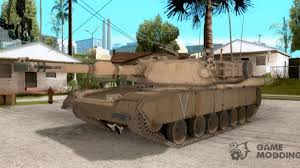

- TRUCOS
Coches VIP
Vehículos de lujo con trucos especiales

¿Te gustaría conducir un coche exclusivo como un VIP? Con este truco podrás hacer que aparezca un coche de lujo en GTA San Andreas. ¡Luce como una estrella del juego! Usa el truco PASKJID para invocar estos vehículos y disfruta de la experiencia de manejar un coche fuera de lo común.
- TRUCOS
Coches indestructibles
Vehículos que no se destruyen al impacto
¡Nunca más te preocupes por destruir tu coche! Con este truco, los coches que invocas se vuelven completamente indestructibles. Ya no importan los choques, las explosiones o los daños, tu coche será el rey de la carretera. Usa el código KJKSZPJ y siente el poder de la indestructibilidad.
- TRUCOS
Aparición de tanque
Invoca el tanque militar en cualquier lugar
¿Te gustaría tener el control total de las calles? Con el truco AIWPRTON puedes hacer aparecer el tanque militar en cualquier lugar. Es la herramienta perfecta para sembrar el caos en GTA San Andreas. ¡Prepárate para aplastar todo a tu paso!
- TRUCOS
Aparición de Hydra
Invoca el caza Hydra con un truco especial

El caza Hydra es uno de los vehículos más poderosos en GTA San Andreas. ¿Te imaginas tenerlo a tu disposición? Con el código JUMPJET podrás hacer que este avión de combate aparezca en cualquier lugar y desatar el caos desde los cielos.
- TRUCOS
Aparición de helicóptero
Consigue un helicóptero con un solo truco

¡Despega en GTA San Andreas con este increíble truco! Usando OHDUDE, podrás hacer aparecer un helicóptero en cualquier parte del mapa. Perfecto para escapar de la policía o simplemente para disfrutar de una vista aérea de la ciudad.
Hola,
bienvenido a la guia definitiva de trucos en GTA San Andreas
Los trucos de GTA San Andreas para PC son la forma ideal de disfrutar del juego de Rockstar a tope desde una óptica distinta y más loca si cabe, ya no sólo por cosas como salud infinita, ganar dinero infinito, conseguir el tanque o hacerte con todas las armas disponibles y que el juego sea más fácil, también para disfrutarlo el doble.